零，或许是数学史上最伟大的发现——或许是发明？一片虚空无人见，如此而已。将零作为标示空无的术语，用于计数，此乃数学界翻天覆地之举。
在数学界有经天纬地之举者，必当名垂青史。然而，零的发现并非一人之力。千年以来，不同想法，形形色色，汇聚一处，或有遗忘。这些想法始于公元前700年的巴比伦，但是我们追寻整个故事，还能上溯更远。
空或无
零有两个基础的意思。第一个显而易见：“空”，或者“无”。所以一位巴比伦将军会问他的军需官：“我们有多少战车？”军需官会这么回答：“没有，将军。”（这个场景是很有可能的，巴比伦在公元前1570年被战车重骑兵所征服！）在这个例子中，军需官的装备清单里没有战车，没人觉得需要记录他们没有的东西。所以我们看到的巴比伦记录不是这样的：步兵：600；战车：0。
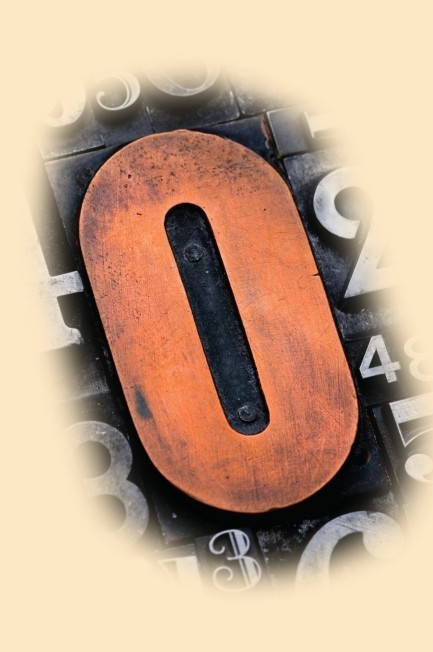
零的符号演进历时数百年。它可能是从一个简简单单的点发展起来的，也可能是计数时的一小块留白。
留白
当巴比伦和其他古代文明认识到“空”或“无”的概念时，他们却没有普适的符号去表示它。古希腊和古罗马也没有。而零在进位制数字系统里还有另一层意思，或者说用途。它可以用来表示数字的一部分没有取值，这也正是我们今天的用法：数字10告诉我们这个数有1个“十位数”的取值和零个“个位数”的取值。巴比伦人用的进位制数字系统基于60而非10——也就是所谓六十进制系统（见第16页），他们用的数字符号也跟我们的不同。巴比伦数字
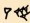
在我们的系统里表示100。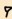
表示1个60，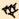
表示40个单位1，加起来是100。但是，如果60位上没有数怎么办？在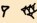
这个例子里，他们用了一块留白，所以它在我们的系统里表示3640。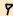
表示1个3600（60×60），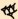
表示40个单位1。符号之间的留白表示这个数里的60位上没有数。一个数里要是有好几处留白就很恼人了。标记
这套系统使用数百年之后，公元前700年，巴比伦数学家开始在大数的留白处加个钩形符号。这是零的符号的开端，但它并非数字，只是留白的标记。同一时期，古希腊人在记录里使用圆形符号来表示零。引入这个符号的可不是数学家，他们并不使用大数，因为他们研究的其实是关于线与形状的几何学。实际上，是古希腊天文学家在他们对恒星或行星没有合适的度量符号可用的时候，画下了圆圈。
表示零的词汇
表示零的词汇比表示其他数字的词汇多多了。它们不仅表示“空”或“无”，也有其他特定含义。
cipher 没有数量
null 空，或无的数量
naught 古英语里的“空”或“无”
love 网球中的零分，来自法语词汇“l’oeuf”（“蛋”的意思）
gooseegg 美国术语里的零分
nil 来自拉丁文，意为“空”或“无”
oh 形如零的字母
计算中用带杠的零，避免与字母O混淆
网球比赛中可没有选手想得零分（译者注：网球中的零分写成“love”——色即是空）。
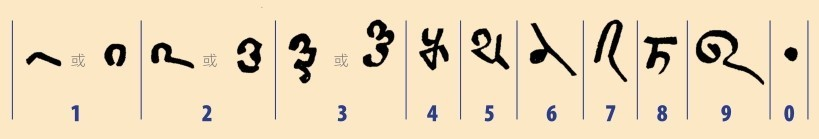
这些是巴克沙利手稿——大约1000年前古印度的一本数学书——里面的数字，其中已经将圆点当作零。
空白
古希腊的圆圈是最初的零吗？未必，因为古希腊人不是把它当作数字来用的，但或许它是我们如今把零写作0的由来。谁也不知道古希腊人为什么用圆圈来表示零。有人猜想这个是希腊字母O（欧米克戎）——希腊文“ouden”（“空”或“无”的意思）的首字母。有人认为圆圈表示“obol”——最小的希腊银币，不值什么钱。“obol”用来当计数的筹码，摆在地上当算盘子的替代品。把一枚银币挪开了，沙地上就留下个圆圈。圆圈就表示空白嘛！
点，点，点
无论什么原因，现代的零总归是个圆圈。但是，第一个真正的零其实是个圆点。在公元6世纪的印度，印度-阿拉伯数字系统发展起来了（就是我们现在所用的，见第24页），数学家在数字中没有取值的地方点个圆点。印度符号跟西方的不同，其系统形如这样：2·1意思是201；1··3意思是1003。公元9世纪，圆点变成了小圈，也许是沿用古希腊字母，也许只是与古人暗合，无人得知。
“零”这个字源自“空白”的概念，用“sunya”来描述。这个单词来自梵文——古印度的一种文字，意为“沙漠”。
西风
早年间印度语里管这个圆点叫kha，但是当印度-阿拉伯数字系统传到欧洲的时候，它有了个阿拉伯名字——sifr，“空白”的古语。1202年，斐波那契在他的著作《计算之书》（见第25页）中写下了零，谈到阿拉伯人称这个数字为“zephirum”。这个词在意大利语里写成“zefiro”，是“西风”的意思。最后，“zefiro”缩减为“zero”，这个名字就传播开来：于1598年在英国首次使用。
公元纪年以相传的耶稣基督诞生之年作为公元元年。但是没有公元0年这个说法，公元元年的前一年是公元前1年。
小于零
随着数字的变革，零带来一种全新的做数学之道——甚至把数字的个数翻了一番。公元7世纪，正是零的破晓之际，印度数学家布拉马古普塔开始考虑含有零的求和问题。把零加到一个数上，还是原来的数；从一个数中减掉自己就成了零。但是从零中减去一个数会怎么样？结果是负数，跟别的计数（正数）方法一模一样，只不过是小于零，而不是大于零。这就引出了一个新的数集，所谓整数——所有正整数，所有负整数，还有零。
负数
负数和正数的运算规则如下：两个正数相加得正数；两个负数相加得负数；正数加上一个负数相当于减掉一个正数；减掉一个负数相当于加上一个正数；相同符号的数（无论正负）做乘法或除法必为正数，因为负负得正；不同符号的数做乘法或除法必为负数。
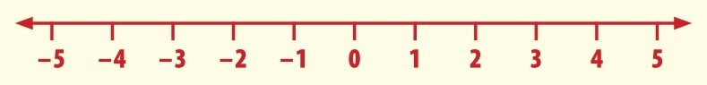
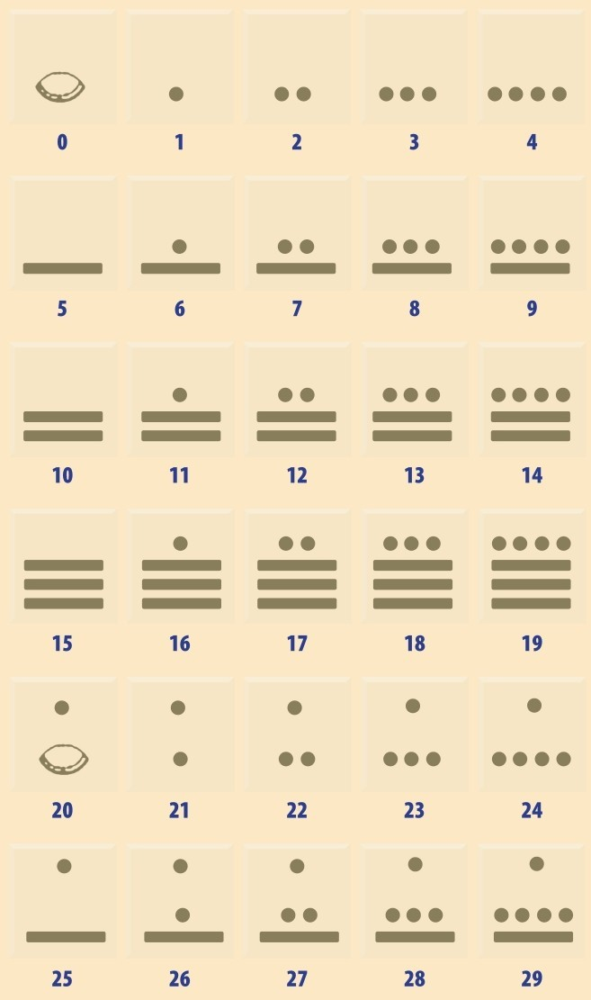
玛雅数字系统只有3种符号：圆点或卵形表示1（左图中用圆点示意），横杠表示5，贝壳表示0。我们逢10进位是因为手指有10个，玛雅数字逢20进位是因为手指和脚趾共有20个。玛雅数字使用进位制系统，单位1在底下，往上是20位，然后是400位（20×20），然后是8000位（20×20×20），如此这般。个位数最大是19。20是一个圆点（表示20）横亘于一个贝壳（0）之上，21是一个圆点（20）叠在另一个圆点（1）上面，如此这般。玛雅数字在表示大数时很有效率，可以应用于他们复杂的历法，比如玛雅数字的9999相当于现代数字的75 789。
美洲领先
零的故事随着知识的传播，从一种文化传到另一种文化，从印度传到波斯、北美洲、欧洲。但是，很久以前，欧洲人、非洲人和亚洲人试图解决的零的问题，其实中美洲的玛雅人早已解决了。他们的数学知识并未传播，所以如今我们采用的术语是“零”，而不是“壳”或者其他什么的。从大约公元前1000年开始，玛雅人居住在如今的墨西哥和危地马拉，而他们的文明在公元3世纪达到巅峰。此时他们发展出一套进位制数字系统，与印度-阿拉伯数字系统相似，但比之领先了若干世纪。
点点杠杠
纪念碑上的玛雅数字，圆点代表1，横杠代表5，贝壳代表0（更多内容参见第34页）。日常的数学运算都是用这些点点杠杠完成的，它们用各种模式排布起来表示数量。这种数字的表示方式简洁至极、无可改进，点点杠杠简单地排列在一起，每5个点进位成一横杠，每4个横杠进位成20，于是在贝壳符号上方加个圆点来表示。这套系统这么简单，即使是很大的数字的加法都可直接计算，不费思量。
参见：
▶数字系统，第16页
▶无穷大，第152页
无穷大
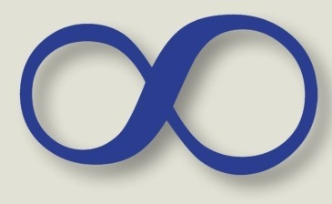
最最简单的乘法表是你绝对无须特意去学的：零乘以任何数还是零。如果你什么都没有，无论翻多少倍，还是什么都没有。如果你用零除以任何数，还是零，理由同上。但是如果你拿任何数除以零会怎么样呢？——你永远可以在存在里找到“空”或“无”。这就是答案为无穷大的由来吗？详细内容见第152页。